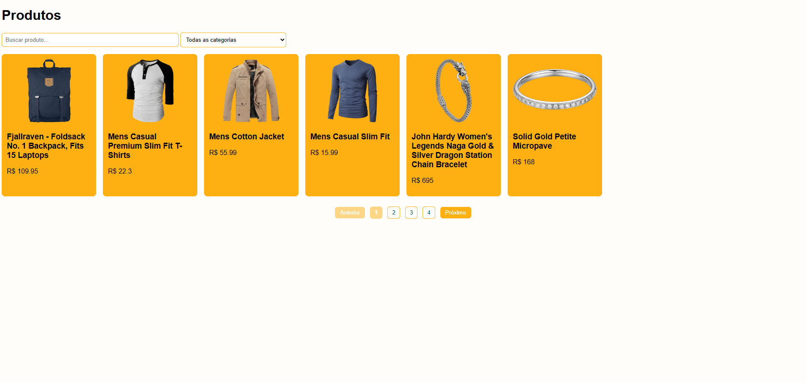
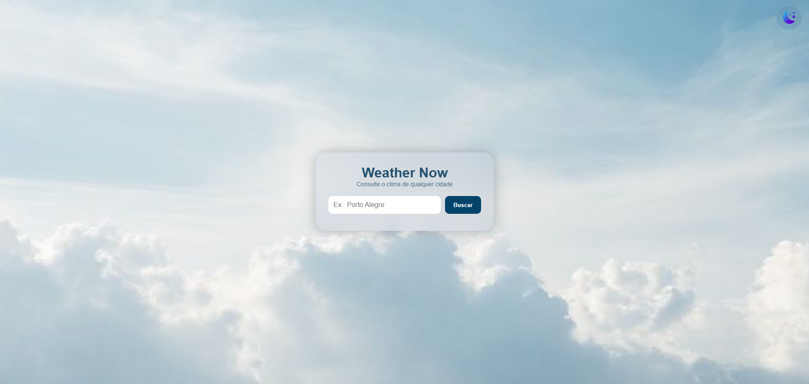
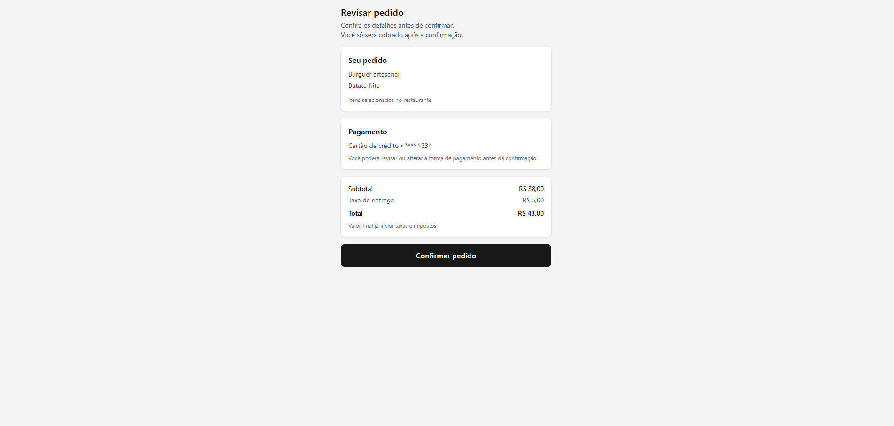
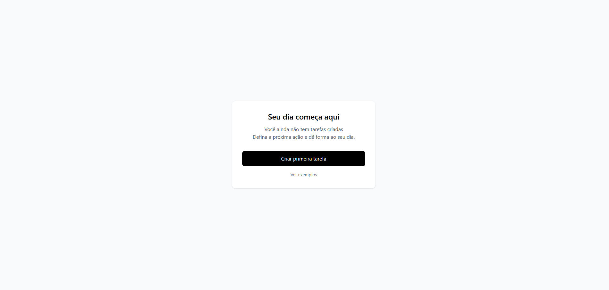
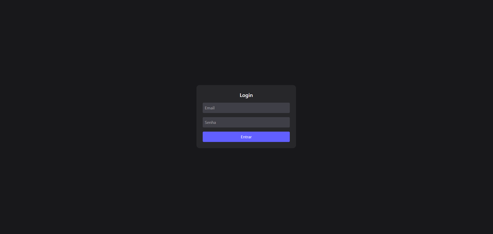
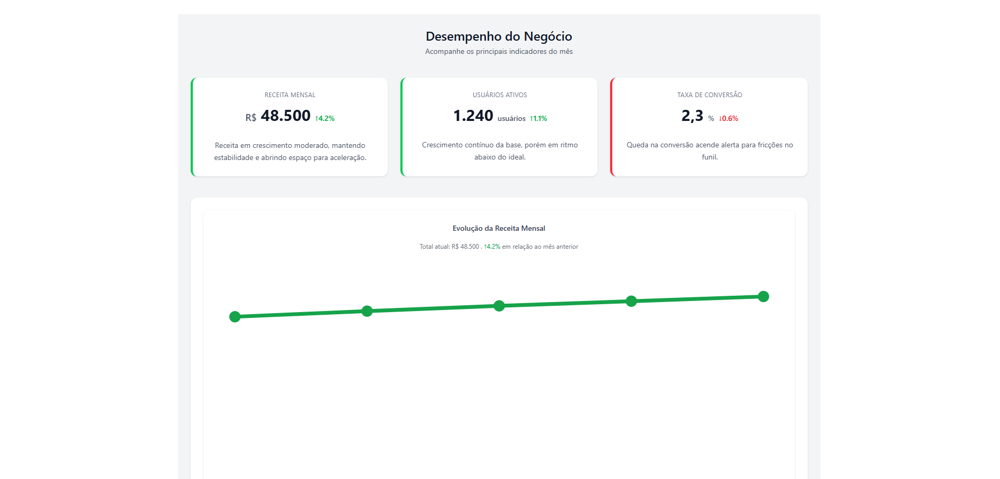

Product List
Organizar uma listagem de produtos com busca, filtros e paginação.
Navegação rápida com estado consistente e previsível.
Desenvolvedor focado em construir interfaces previsíveis, escaláveis e orientadas à experiência do usuário.
> whoami
Uelinton Janke
> role
Full Stack Developer
> education
ADS • 3º semestre
> Status
Buscando oportunidade
Front-End Developer em transição para Full Stack
Interfaces modernas, responsivas e com foco em UI/UX e animações
Estágio ou primeira vaga como Desenvolvedor Júnior

Aplicação de clima construída em JavaScript puro com foco em estado previsível, feedback imediato ao usuário e arquitetura escalável.
Projetos desenvolvidos para explorar problemas reais de produto, estado e experiência do usuário.

Organizar uma listagem de produtos com busca, filtros e paginação.
Navegação rápida com estado consistente e previsível.

Simular um checkout realista sem backend.
Estados visuais claros e previsíveis.
Projetos menores focados em validação de conceitos, UX e modelagem de estado.

Reduzir a complexidade dos primeiros passos de um novo usuário.
Onboarding progressivo com fluxo claro e menor fricção.

Simular autenticação com sessões e proteção de rotas.
Fluxo de login previsível com feedback para cada estado.

Apresentar métricas de forma clara e fácil de interpretar.
Dashboard com leitura rápida e hierarquia visual consistente.
Mais do que escrever código, procuro entender o problema, projetar uma solução simples e evoluí-la continuamente. Esse processo orienta todas as decisões que tomo durante o desenvolvimento.
Interfaces reutilizáveis, baixo acoplamento e responsabilidades bem definidas.
Redução de renderizações, otimização de carregamento e foco na experiência.
Código preparado para crescer sem aumentar a complexidade.
Interfaces inclusivas, navegação por teclado e semântica correta.
Este projeto foi desenvolvido utilizando JavaScript puro, com foco em previsibilidade, separação de responsabilidades e facilidade de manutenção.
Construir um portfólio escalável utilizando os mesmos princípios de arquitetura que utilizo em aplicações reais.
Modais e comportamentos globais são controlados através de um estado observável próprio inspirado no padrão Pub/Sub.
UI → State → Subscribers → Interface
O projeto é dividido entre Core, Features e Utils, reduzindo acoplamento e facilitando evolução futura.
core/ • features/ • utils/
Componentes não manipulam diretamente outros componentes. Alterações acontecem através do estado compartilhado.
Modal.open() → UI.setState()
Regras críticas de negócio são validadas através de testes executados automaticamente em ambiente de desenvolvimento.
shouldShowCard()
Cada módulo possui uma responsabilidade específica: comportamento global, funcionalidades, utilitários e testes.
Core → Features → Utils
Uso de requestAnimationFrame, IntersectionObserver e renderização sob demanda para reduzir trabalho desnecessário da interface.
requestAnimationFrame() • IntersectionObserver